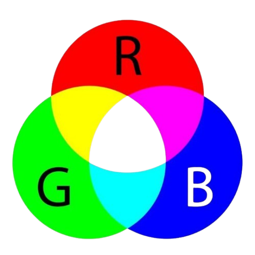

O modelo RGB é um sistema aditivo amplamente utilizado em telas que emitem luz, como monitores e televisores. Ele se baseia na combinação de três cores primárias — vermelho, verde e azul — cujas intensidades variáveis se sobrepõem para formar uma ampla gama de cores.
Esse modelo é chamado de aditivo porque funciona pela adição de luz para criar novas tonalidades.

- Quanto mais luz for adicionada, mais brilhante será.
- Quanto menos luz for adicionada, mais escuro será a cor.
A escala RGB para adicionar mais luz, vai até 255 e o mínimo chega em 0.
| Nome da cor | R | G | B | Código |
|---|---|---|---|---|
| Preto | 0 | 0 | 0 | rgb(0, 0, 0) |
| Branco | 255 | 255 | 255 | rgb(255, 255, 255) |
| Vermelho | 255 | 0 | 0 | rgb(255, 0, 0) |
| Verde | 0 | 255 | 0 | rgb(0, 255, 0) |
| Azul | 0 | 0 | 255 | rgb(0, 0, 255) |
| Amarelo | 255 | 255 | 0 | rgb(255, 255, 0) |
| Ciano | 0 | 255 | 255 | rgb(0, 255, 255) |
| Azul Claro | 135 | 206 | 250 | rgb(135, 206, 250) |
Esse código de cores segue a ordem da sigla RGB, onde o primeiro número representa o vermelho, o segundo o verde e o terceiro o azul. Ajustando esses valores, é possível criar milhares de combinações de cores.
O pixel é a menor unidade de uma imagem digital, presente em monitores, celulares e outros dispositivos. Cada pixel é composto por três subpixels — vermelho, verde e azul — cuja intensidade varia para determinar a cor final exibida.
Um pixel basicamente armazena três subpixels e esses três subpixels determinam a cor de um pixel de acordo com a intensidade da luz de cada subpixel.
CMYK é um modelo de cores subtrativo, amplamente utilizado em impressoras ou em máquinas que precisam de tintas, que não possuem pixel.
Ao contrário do RGB, que adiciona luz para formar cores, o CMYK funciona pela mistura de pigmentos. Esse processo é chamado de subtrativo porque a sobreposição das cores reduz a quantidade de luz refletida, bloqueando outras tonalidades.
CMYK é a sigla para Cyan (Ciano), Magenta, Yellow (Amarelo) e K (Key ou Preto).
A letra "K" representa "Key" porque o preto é considerado a cor-chave no modelo de impressão. Ele é fundamental para garantir contrastes mais nítidos e detalhes mais precisos. Embora a mistura de magenta, amarelo e ciano teoricamente produza a cor preta, na prática resulta em um tom marrom escuro. Além de não gerar o preto ideal, essa mistura consome mais tinta. A adição da cor preta, portanto, reduz os custos e assegura a cor preta verdadeira da tinta.
A escolha entre RGB e CMYK depende do seu objetivo, pois ambos produzem cores, mas de maneiras diferentes. O RGB forma cores combinando luz nos subpixels, enquanto o CMYK as cria misturando pigmentos de tinta.
RGB é indicado para telas digitais, como monitores, celulares, televisões.
CMYK é utilizado em impressoras, máquinas que requerem tintas, como adesivos, cartazes.